Florence Mary Gardiner, Evolution of Fashion. Davis, ed. from the 1897 edition. [eng]. Cited by chapter/paragraph.
Passages i.1-i.52
urn:cts:fuTexts:gardiner.eof.davis:i.1-i.52
i.1CHAPTER I.
i.2THE DRESS, B.C. 594--A.D. 1897.
i.3"Fashions that are now called new Have been worn by more than you; Elder times have used the same, Though these new ones get the name."
i.4_Middleton's "Mayor of Quinborough."_
i.5A hard fate has condemned human beings to enter this mortal sphere without any natural covering, like that possessed by the lower animals to protect them from the extremes of heat and cold. Had this been otherwise, countless myriads, for untold ages, would have escaped the tyrannical sway of the goddess Fashion, and the French proverb, _il faut souffrir pouretre belle_, need never have been written.
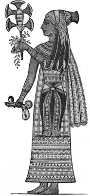
i.7The costume of our progenitors was chiefly remarkable for its extreme simplicity; and, as far as we can gather, no difference in design was made between the sexes. A few leaves entwined by the stalks, the feathers of birds, the bark of trees, or roughly-dressed skins of animals were probably regarded by _beaux_ and _belles_ of the Adamite period as beautiful and appropriate adornments for the body, and were followed by garments made from plaited grass, which was doubtless the origin of weaving, a process which is nothing more than the mechanical plaiting of hair, wool, flax, &c. In many remote districts these primitive fashions still prevail, as, for example, in Madras, where, at an annual religious ceremony, it is customary for the low caste natives to exchange for a short period their usual attire for an apron of leaves. In the Brazilian forests the _lecythis_, or "shirt tree," is to be found, from which the people roll off the bark in short lengths, and, after making it pliable in water, cut two slits for the arm-holes and one for the neck, when their dress is complete and ready for use. The North American Indian employs feathers for purposes of the toilet, and many African tribes are noted for their deftly-woven fabrics composed of grass and other vegetable fibres, while furs and skins are essential articles of dress in Northern latitudes. Perhaps the earliest specimen of a modiste's bill in existence has recently been found on a chalk tablet at Nippur, in Chaldea. The hieroglyphics record ninety-two robes and tunics: fourteen of these were perfumed with myrrh, aloes and cassia. The date of this curious antique cannot be less than two thousand eight hundred years before the Christian era. In ancient times it must be remembered that the principal seats of civilisation were Assyria and Egypt, and upon these countries Western nations depended for many of the luxuries of life. The Jews derived their fine fabrics from the latter place, which was particularly noted for its linen manufactures and for magnificent embroideries, of which the accompanying illustration will give some idea. Medes and Babylonians, of the highest class, partially arrayed themselves in silk, which cost its weight in gold, and about the time of Ezekiel (B.C. 594) it is known to have been used in the dress of the Persians. It is a remarkable circumstance that this animal product was brought to the West manufactured in cloth, which was only half silk; and it is said the plan was devised of unravelling the stuff, which was rewoven into cloth of entire silk. Owing to its high price, the Romans forbade its being used for the entire dress by men, complete robes of silk being reserved for women. It is numbered among the extravagant luxuries of Heliogabalus that he was the first man who wore a silken garment, and the anecdote is well known of the Emperor Aurelian, who refused, on the ground of its extravagant cost, a silk dress which his consort earnestly desired to possess.
i.8Monuments still in existence show that the Egyptians, owing to the warmth of their climate, were partial to garments of a semi-transparent character, while those living on the banks of the Tigris, who were subjected to greater extremes of temperature, wore clothing of similar design, but of wool, with heavy fringes of the same as a trimming. In some cases this feature of Assyrian costume is shown in double rows, one pendent, while the other stands out in a horizontal direction.
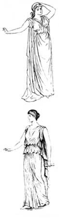
i.10The early Greek dress, or chiton, was a very simple contrivance, reaching to the feet. If ungirdled, it would trail on the ground; but generally it was drawn through the zone or waistbelt in such a manner that it was double to the extent of about thirty inches over the vital organs of the body. The great distinction between male and female dress consisted in the length of the skirt. The trimmings were of embroidery, woven diapers, figure bands with chariots and horses; and, in some cases, glass ornaments and thin metal plates were applied. Among the working classes the chiton was, of course, homespun, or of leather.
i.12The stola was the Roman equivalent for the nineteenth century robe or gown, and in many respects resembled the Greek chiton. The fabrics employed were wool and linen up to the end of the Republic, though at a later date, as has already been stated, silk was imported. Colour, under the Emperors, was largely used, and at least thirteen shades of the dye obtained from the murex, which passed under the general name of purple, could be seen in the costume of both sexes.
i.13When the Roman Empire was dismembered (A.D. 395) a style of dress seems to have flourished in the important towns of the Mediterranean, which was similar to that worn in mediAeval times in Britain, and which may be examined in the specimens of statuary adorning tombs of the twelfth and thirteenth centuries. The semi-tight under-dress and sleeves appear to have been elaborately embroidered, and the loose mantle of plain material was edged with a border.
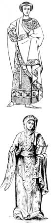
i.15One of the earliest descriptions of the female dress in Britain is that of Boadicea, the Queen of the Iceni, whom we are told wore a tunic woven chequerwise in purple, red, and blue. Over this was a shorter garment open on the bosom, and leaving the arms bare. Her yellow hair flowed over her shoulders, upon which rested an ample cloak, secured by a _fibula_ (brooch). A torque, or necklet, was also worn; a pair of bronze breastplates as a protection from the Roman arrows, and her fingers and arms were covered with rings and bracelets.
i.17The costume of the Anglo-Saxon ladies consisted of a _sherte_, or _camise_, of linen next the skin, a kirtle, which resembled the modern petticoat, and a gunna, or gown, with sleeves. Out of doors a mantle covered the upper portion of the body, and with the coverchief, or head rail, formed a characteristic feature of the dress of the day. Cloth, silk, and linen were the favourite materials for clothing, and red, blue, yellow, and green the fashionable colours. Very little black and white were used at this period. Saxon women were renowned for their skill with the needle, and used large quantities of gold thread and jewels in their work. Among other instances quoted, Queen Editha embroidered the coronation mantle of her husband, Edward the Confessor.
i.18For some years after the Norman Conquest, women retained the costume of the Anglo-Saxon period, with certain additions and modifications. Fine coloured cloths and richest furs were used by both sexes, and sleeves and trains were such a length that it was found necessary to knot them, so that they should not trail upon the ground.
i.19The next important change was the surcoat and tight bodice, which was fastened in front to fit the figure.
i.20There are evident traces that as civilisation advanced the love of dress and the desire of the fair sex to appear beautiful in the eyes of all beholders increased in like proportion. From ancient MSS. and other sources, we have ample proof of this. St. Jerome calls women "_philoscomon_," that is to say, lovers of finery, and another writer states: "One of the most difficult points to manage with women is to root out their curiosity for clothes and ornaments for the body." St. Bernard admonished his sister with greater candour than politeness on her visiting him, well arraied with riche clothinge, with perles and precious stones: "Such pompe and pride to adorne a carion as is youre body. Thinke ye not of the pore people, that be deyen for hunger and colde; and that for the sixth parte of youre gay arraye, forty persons might be clothed, refreshed, and kepte from the colde?"
i.21The increased facilities for travelling offered to those engaged in the Crusades, and the necessary intercourse with other nations, caused considerable quantities of foreign materials to be imported to England during the Middle Ages: and this had a corresponding effect upon the costume of the period, which was chiefly remarkable for its richness and eccentricity of form. Among the materials in use may be mentioned diaper cloth from Ypres, a town in Flanders, famous for its rich dress stuffs; tartan, called by the French "tyretaine," meaning _teint_, or colour of Tyre (scarlet being indifferently used for purple by ancient writers, and including all the gradations of colour formed by a mixture of blue and red, from indigo to crimson). There was a fine white woollen cloth called Blanket, named after its inventor, Sarcenet, also from its Saracenic origin, and gauze which was made at Gaza in Palestine. Ermine was strictly confined to the use of the Royal Family and nobles, and cloth of gold, and habits embroidered with jewellery, or lined with minever or other expensive fur, could only be worn by knights and ladies with incomes exceeding 400 marks per annum. Those who had not more than 200 marks were permitted to wear silver cloth, with ribands, girdles, &c., reasonably embellished; also woollen cloth not costing more than six marks the piece.
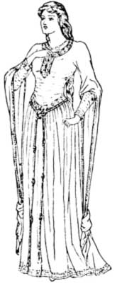
i.23The tight forms of dress now in common use among women were an incentive to tight lacing, an injurious practice, from which their descendants suffer. A lady is described
i.24"Clad in purple pall, With gentyll body and middle small,"
i.25and another damsel, whose splendid girdle of beaten gold was embellished with emeralds and rubies, evidently, from the description, had a waist which was not the size intended by Nature.
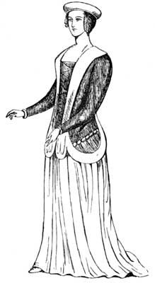
i.27During the Wars of the Roses both trade and costume made little progress, and after the union of the Houses of York and Lancaster by the marriage of Henry VII. with his Queen, Elizabeth, their attention was chiefly concerned in filling their impoverished coffers, which left them little opportunity for promoting new fashions in dress. Henry VIII. afforded ample facilities for the revival of the trade in dress goods, and there is little difficulty in tracing female costume of the sixteenth century when we remember that in the course of thirty-eight years he married six wives, besides having them painted times without number by all the popular artists of the day.
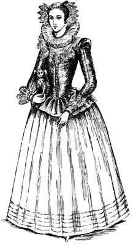
i.29J. R. Planche in his "History of British Costume," says: "The gowns of the nobility were magnificent, and at this period were open in front to the waist, showing the kirtle, or inner garment, as what we should call the petticoat was then termed." Anne of Cleves, who found so little favour in Henry's eyes, is said to have worn at their first interview "a rich gowne of cloth of gold made round, without any train, after the Dutch fashion;" and in a wardrobe account of the eighth year of this Bluebeard's reign appears the following item: "Seven yards of purple cloth of damask gold for a kirtle for Queen Catherine of Arragon." The dress of Catherine Parr is thus described by Pedro de Gante, secretary to the Spanish Duke de Najera, who visited Henry VIII. in 1543-1544: "She was robed in cloth of gold, with a 'saya' (petticoat) of brocade, the sleeves lined with crimson satin and trimmed with three-piled crimson velvet. Her train was more than two yards long." Articles of dress were often bequeathed by will. In one made on the 14th of August, 1540, William Cherington, yeoman, of Waterbeche, leaves "To my mother _my holyday gowne_." Nicholas, Dyer of Feversham, 29th October, 1540, "To my sister, Alice Bichendyke, thirteen shillings and ninepence _which she owed me_, and two kerchiefs of holland." John Holder, rector of Gamlingay, in 1544 leaves to Jane Greene "my clothe frock lined with satin cypress." These entries are from wills in the Ely Registry.
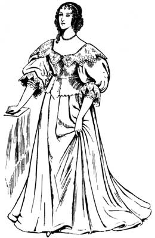
i.31A peculiar feature in the costume of both sexes was sleeves distinct from the gown, but attached (so as to be changed at pleasure) to the waistcoat. Among the inventories we find three pairs of purple satin sleeves for women, one pair of linen sleeves paned with gold over the arm, quilted with black silk and wrought with flowers; one pair of sleeves of purple gold tissue damask wire, each one tied with aglets of gold; one pair of crimson satin sleeves, four buttons of gold being set on each, and in every button nine pearls.
i.32We are all familiar with the distended skirts, jewelled stomachers and enormous ruffs which adorned the virgin form of Good Queen Bess. In the middle of her reign the body was imprisoned in whalebone, and the fardingale, the prototype of the modern hoop, was introduced, as it was not to be supposed that a lady who is said to have left three thousand dresses in her wardrobe would remain faithful to the fashions of her grandmother; and Elizabeth's love of dress permeated all classes of society.
i.33The portrait of Mary Queen of Scots, who was considered an authority on matters of the toilet, and whose taste for elegance of apparel had been cultivated to a high degree during her residence at the French Court is given. There is a subtlety and charm about it which is wanting in the costume of her cousin Elizabeth, and it may be considered a fair type of what was worn by a gentlewoman of that period. The full skirt appears to fall in easy folds, and the basqued bodice, with tight sleeves, is closely moulded to the figure and surmounted by an elaborately-constructed ruff of muslin and lace.
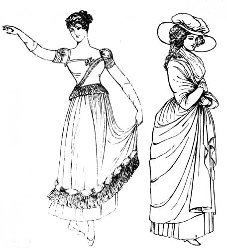
i.35To the great regret of antiquarians, the wardrobes of our ancient kings, formerly kept at the Tower, were by the order of James I. distributed. At no period was the costume of Britain more picturesque than in the middle of the seventeenth century, and we naturally turn to its great delineators Velasquez, Van Dyck, Rembrandt, and Rubens, who delighted in giving us such fine examples of their work. Women had grown tired of the unwieldy fardingale, and changed it for graceful gowns with flowing skirts and low bodices, finished with deep vandyked collars of lace or embroidery.
i.36A studied negligence, an elegant _deshabille_ prevailed in the Stuart Court, particularly after the Restoration. Charles II.'s bevy of beauties are similarly attired, and the pictures in Hampton Court show us women whose snowy necks and arms are no longer veiled, and whose gowns of rich satin, with voluminous trains, are piled up in the background. Engravings and drawings which may be seen in every printseller's window make special illustrations of this period unnecessary.
i.37[Illustration: 18TH CENTURY. WALKING COSTUME.]
i.38Dutch fashions appear to have followed in the wake of William and Mary. Stomachers and tight sleeves were once more in favour, and fabrics of a rich and substantial character were employed in preference to the softer makes of silk, which lent itself so well to the soft flowing lines of the previous era.
i.39An intelligent writer has remarked "that Fashion from the time of George I. has been such a varying goddess that neither history, tradition, nor painting has been able to preserve all her mimic forms; like Proteus struggling in the arms of Telemachus, on the Phanaic coast, she passed from shape to shape with the rapidity of thought." In 1745 the hoop had increased at the sides and diminished in front, and a pamphlet was published in that year entitled "The enormous abomination of the hoop petticoat, as the fashion now is." Ten years later it is scarcely discernible in some figures, and in 1757 reappears, extending right and left after the manner of the court dress of the reign of George III. For the abolition of this monstrosity we are indebted to George IV., and ladies' dresses then rushed to the other extreme. Steel and whalebone was dispensed with, and narrow draperies displayed the form they were supposed to conceal, and were girdled just below the shoulders.
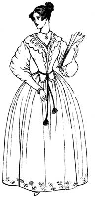
i.41These were in time followed by the bell-shaped skirts worn at the accession of Her Majesty Queen Victoria, during whose reign fashion has indeed run riot. The invention of the sewing machine was the signal for the appearance of frills and furbelows, and meretricious ornament of every kind. In the middle of the present century crinolines were again to the fore, skirts were proportionately wide and generally flounced to the top. The bodice terminated at the waist with a belt; but in some cases a Garibaldi, or loose bodice of different texture, was substituted. The next change to be noted was that hideous garment the "polonaise," which was a revival of, and constructed on similar lines to, the "super froc" of the Middle Ages. For many years English ladies, with a supreme disregard for the appropriate, wore this with a skirt belonging to an entirely different costume. But at last people got nauseated with these abominations, and under the gentle sway and influence of "Our Princess" a prettier, more useful and rational costume appeared. In 1876 the graceful Princess dress, which accentuated every good point in the figure, was generally worn; and though this costume in the latter part of its career was fiercely abused by the rotund matron and Mrs. Grundy, for clinging too closely to the lines of the human form, it was distinctly an advance as regards health and beauty on the varying styles which preceded it.
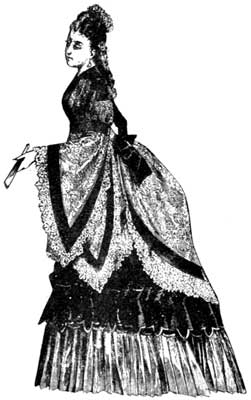
i.43The Aesthetic movement has also had a marked influence on our taste in all directions, but more especially in the costume of the last few years; and though the picturesque garb of the worshippers of the sunflower and the lily may not be adapted to the wear and tear of this workaday world, it is beautiful in form and design, incapable of undue pressure; and for children and young girls it would be difficult to imagine a more charming, artistic, and becoming costume.
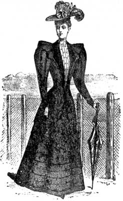
i.45Once more we are eschewing classical lines for grotesque which makes caricatures of lovely women, and drives plain ones to despair. The subdued and delicate tints which a few seasons since were regarded with favour have been superseded by garish shades and bright colours, which seem to quarrel with everything in Nature and Art. Unfortunately, we English are prone to extremes, and possess the imitative rather than the creative faculty. Consequently, our national costume is seldom distinctive, but a combination of some of the worst styles of our Continental neighbours, who would scorn to garb themselves with so little regard for fitness, beauty, and the canons of good taste.
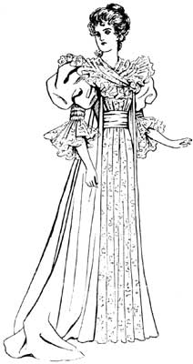
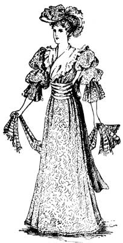
i.48_After a painting by Sir Joshua Reynolds._]
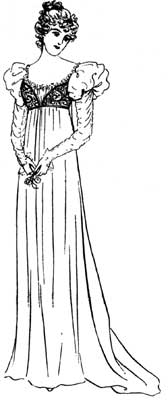
i.50Two dominant notes, however, have been struck in the harmonies of costume during the last twenty-five years--the tailor-made dress, which may almost be regarded as a national livery; and the tea gown, that reposeful garment to which we affectionately turn in our hours of ease. How well each in its way is calculated to serve the purpose for which it is designed, the simple cloth, tweed, or serge costume moulded to the lines of the figure, adapted to our changeful climate, and giving a _cachet_ to the wearer, not always found in much more costly apparel, a rational costume in the best sense of the word, and one which women of all ages may assume with satisfaction to themselves and to those with whom they come in contact. The tea gown, on the other hand, drapes the figure loosely so as to fall in graceful folds, and may be regarded as a distinct economy, as it so often takes the place of a more expensive dress. Beauty, which is one of Heaven's best gifts to women, is useless unless appropriately framed, and a well-known exponent on the art of dressing artistically, has laid down the axiom that harmonies of colour are more successful than contrasts. If we turn to Nature we have an unfailing source of inspiration. The foliage tints, sunset effects, the animal and mineral worlds all offer schemes of colour, which can be readily adapted to our persons and surroundings. And to look our best and, above all, to grow old gracefully, is a duty which every daughter of Eve owes to humanity. The manner in which so many women give way early in life is simply appalling. While still in the bloom of womanhood they assume the habits and dress of decrepitude, submit to be placed on the social shelf without a murmur, and calmly allow those slightly their junior, and in some cases their senior, to appropriate the good things of life, and to monopolise the attention of all and sundry. Mothers in their prime willingly allow anyone who can be persuaded to do so, to chaperone their daughters, and to pilot them through the social eddies and quicksands of their first season, and through sheer indolence fail to exercise the lawful authority and responsibility which maternity entails. The unmarried woman, conscious that she is no longer in her first youth, and indifferent to the charms of maturity, takes to knitting socks in obscure corners, and assumes an air of self-repression and middle-agedness which apparently takes ten years from her span of existence, and conveys to the casual onlooker, that she has passed the boundary line between youth and old age. Why should these women sink before their time into a slough of dowdyism and cut themselves off from the enjoyments civilisation has provided for their benefit?
i.51Equally to be deprecated are those who cling so desperately to youth that they entirely forget the later stages of life have their compensations. Women who in crowded ballrooms display their redundant or attenuated forms to the gaze of all beholders, whose coiffure owes more to art than nature, and who comfort themselves with the conviction that in a carefully shaded light rouge and pearl powder are hardly distinguishable from the bloom of a youthful and healthy complexion. A variety of circumstances combine to bring into the world a race of people who cannot strictly lay claim to beauty, but who nevertheless have many good points which might be accentuated, while those that are less pleasing could be concealed. A middleaged woman will respect herself and be more respected by others if she drapes her person in velvet, brocade, and other rich fabrics which fall in stately folds, and give her dignity, than if she persists in decking herself in muslin, crepon, net, and similar materials, because in the long since past they suited her particular style. Gossamers belong to the young, with their dimpled arms, shoulders of snowy whiteness, and necks like columns of ivory. Their eyes are brighter than jewels, and their luxuriant locks need no ornament save a rose nestling in its green leaves, a fit emblem of youth and beauty.
i.52With the education and art training at present within the grasp of all classes of the community there is nothing to prevent our modifying prevailing fashions to our own requirements; and common sense ought to teach us (even if we ignore every other sentiment which is supposed to guide reasoning creatures) that one particular style cannot be appropriate to women who are exact opposites to each other. If each person would only think out for herself raiment beautiful in form, rich in texture, and adapted to the daily needs of life, we should be spared a large number of the startling incongruities which offend the eye in various directions.